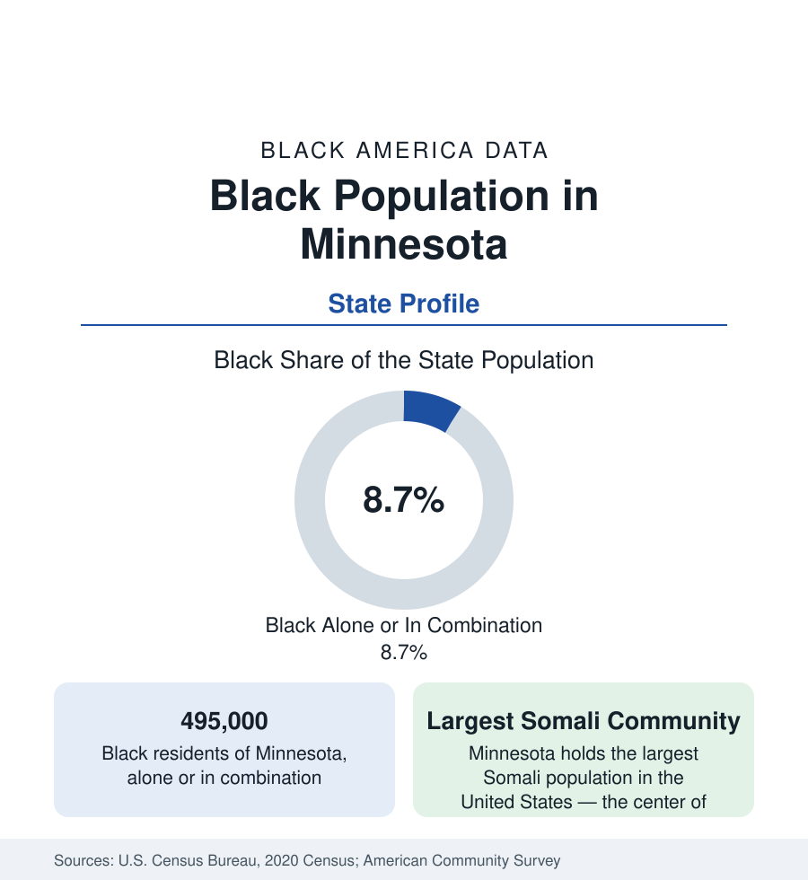

Black Census
Black Population in Minnesota: The Twin Cities' Two Stories
About 495,000 Black Minnesotans — one in twelve residents — holding both the nation's largest Somali community and some of its widest outcome gaps. The census profile.

Minnesota holds about 495,000 Black residents — Black alone or in combination — roughly one in twelve of its people, with Black alone at about 399,000, or 7 percent. Minnesota's Black population is a study in juxtaposition: an old, small native-born community centered in the Twin Cities; the largest Somali community in the United States, built by refugee resettlement since the 1990s; and outcome indicators that rank, in study after study, among the widest Black-white gaps in the nation despite the state's overall prosperity rankings. This article profiles the population in the census data.
The Twin Cities: Nearly All of It
The Minneapolis–St. Paul metro holds roughly nine in ten Black Minnesotans. Minneapolis itself is about a fifth Black — some 85,000 people — its community centered historically in the Near North (the North Side) and the south side's Phillips and Powderhorn districts, now spread across the north and northeast and into the first-ring suburbs. St. Paul is roughly a sixth to a fifth Black, its community centered on the Rondo neighborhood's successor districts — Rondo, the city's historic Black center, was largely demolished for the interstate in the 1960s, the displacement the historical record documents in detail — and the East Side. The suburbs hold the growth: Brooklyn Park and Brooklyn Center, northwest of Minneapolis, are among the most diverse suburbs in the Midwest at roughly a quarter to a third Black; Burnsville, Fridley, Maplewood, and the south metro add growing communities.
The Somali Chapter
Minnesota's Black immigrant data are dominated by one of the great resettlement stories in the record. Somali refugees began arriving in the early 1990s, and secondary migration concentrated the community in the Twin Cities until Minnesota held the largest Somali population in the nation — estimated in the tens of thousands, with the community's own counts running higher — centered in Minneapolis's Cedar-Riverside (the high-rise district known nationally by its skyline silhouette), spreading through the south metro and to St. Cloud, Rochester, and the meatpacking towns. Ethiopian (especially Oromo), Liberian (Brooklyn Park holds one of the largest Liberian communities in America), Kenyan, and Nigerian communities layer with it. The composite effect in the survey data: Minnesota's Black population is among the most foreign-born in the nation outside the coastal gateways, and its second generation is now the Twin Cities school systems' defining cohort.
The Gap State
Minnesota's Black indicators present the literature's standing puzzle. A state that ranks at or near the top in overall income, education, and health records Black outcomes that rank near the bottom in several national comparisons: Black homeownership in the Twin Cities in the mid-twenties percent range — among the lowest of any metro in this reference — against a state White rate in the high seventies; Black median household income at roughly half the state's overall figure; educational proficiency gaps in the state assessment data among the nation's widest. The explanations the research offers are compositional (a refugee-origin population's starting point), structural (the housing and lending data of a community that was small when the postwar wealth-building machinery ran), and institutional (the outcome gaps persist across the state's well-funded systems). The reference position is the data: Minnesota is the proof that aggregate prosperity does not distribute itself.
Beyond the Metro
Outside the Twin Cities, Black Minnesota is small and increasingly immigrant-shaped: Rochester (the Mayo Clinic economy) holds a growing, substantially African community; St. Cloud's Somali population is among the largest per capita in the nation; the meatpacking corridors of Worthington, Willmar, and Austin record Black and African populations built by plant labor recruitment since the 1990s. Duluth and the Iron Range record small, old communities. The state's HBCU count is zero; Black higher education runs through the University of Minnesota and the state system, with Augsburg and the private colleges of the Twin Cities carrying distinctive shares.
Reading the Minnesota Numbers
Minnesota's profile holds three facts that must be quoted together or not at all: one of the nation's most prosperous states; one of its largest and most vibrant Black immigrant communities; and some of its widest racial outcome gaps. The 495,000 in these tables are the population all three sentences describe.
More in Black Census
The Black Population of the United States: Size, Definitions, and Distribution
The Black population of the United States totals 52.8 million — 15.4 percent of the nation. How the Census Bureau defines and counts the population, and where it lives.
Black Median Household Income in the United States
Black median household income stands at $56,490 in the Census Bureau's annual income report — how the figure is measured, how it compares, and what drives it.
The Black Poverty Rate: Levels, Children, and the Long Trend
The official Black poverty rate is 17.1 percent — against 11.1 percent nationally and 7.7 percent for non-Hispanic White Americans. How poverty is measured and what the data show.
Source: U.S. Census Bureau, 2020 Census; American Community Survey; Population Estimates Program.